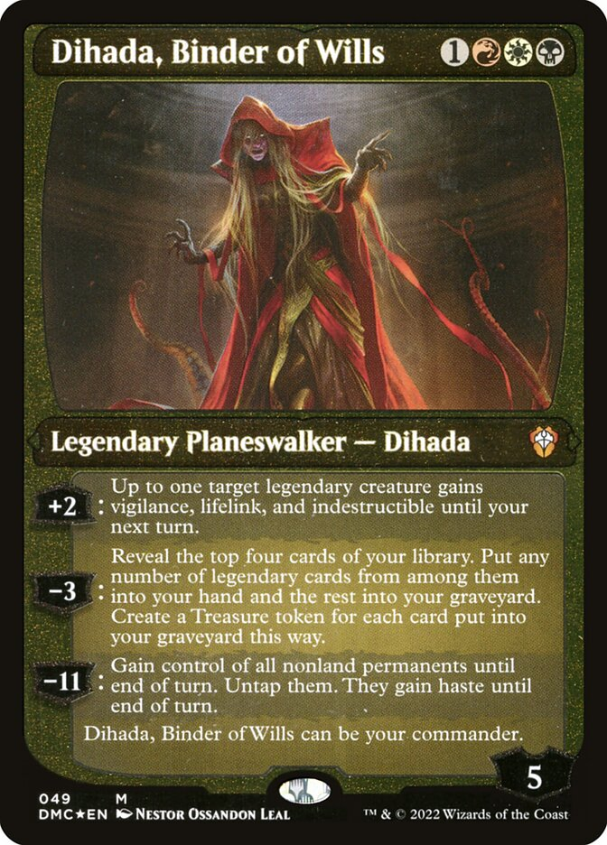
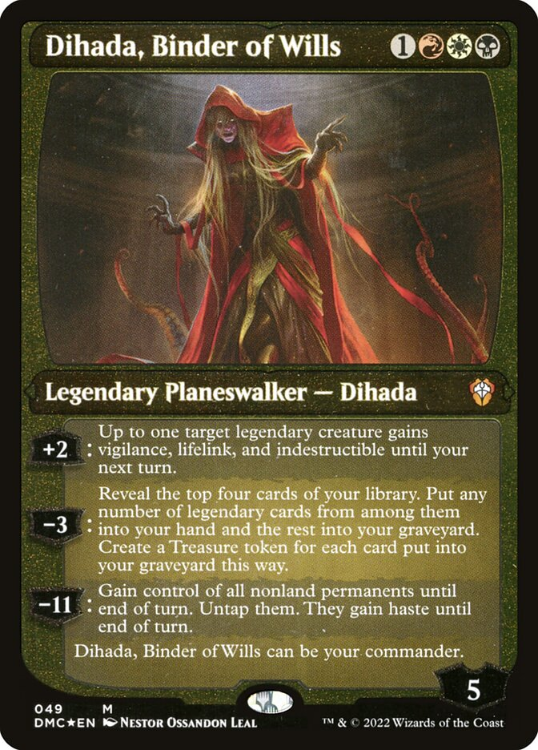

Dihada es una mujer demoníaca y puede manipular su forma. La mitad superior de su cuerpo es similar a una mujer,
con piel gris, cabello largo y negro, ojos con pupilas blancas y dos brazos con manos en forma de garra.
La mitad inferior de su cuerpo está formada por patas que terminan en tentáculos (similares a los pulpos) ventosas
grises y moradas. Es una maga poderosa con un vasto conocimiento de la magia. Su experiencia mágica está en
corromper, esclavizar y manipular criaturas. Dihada tenía acceso a maná rojo, negro, blanco y azul.